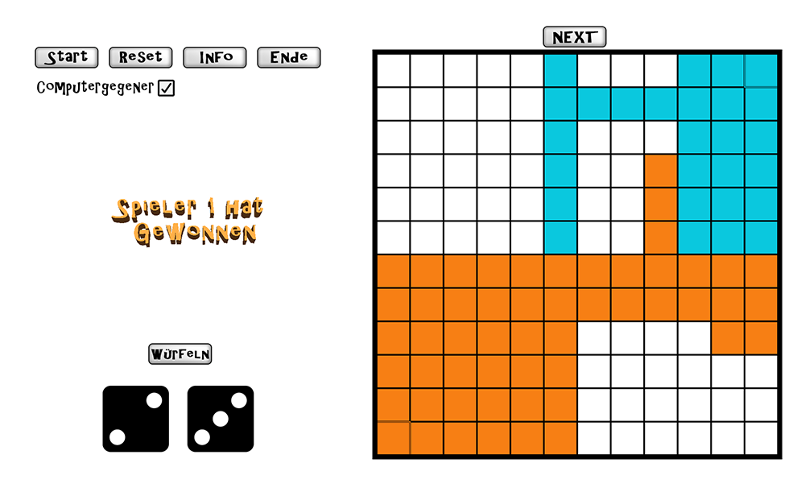

1 / 6
2 / 6
The game board consists of 144 fields. The players start in opposite corners. If one player captures more fields than the other, he wins.
3 / 6

In each round, the player rolls the dice and can mark the corresponding area on the game board. This area must be connected to his already captured fields.
4 / 6
The area can only be placed, if enough space is available. Otherwise the turn must be skipped.
5 / 6

The game checks if a player has surrounded an area so that the other player cannot reach it. These fields count as captured and if a player has more than 72 fields in his color, he wins.
6 / 6
Rules and controls.
Area-Dice-Game
Description
This game was developed in C++ and with the Microsoft Foundation Class Library (MFC). It was a project within the second university semester in programming. The goal of the game is to capture more fields than your opponent. You can play Couch Coop with a friend or against a computer enemy.
Date
04/2019 - 06/2019